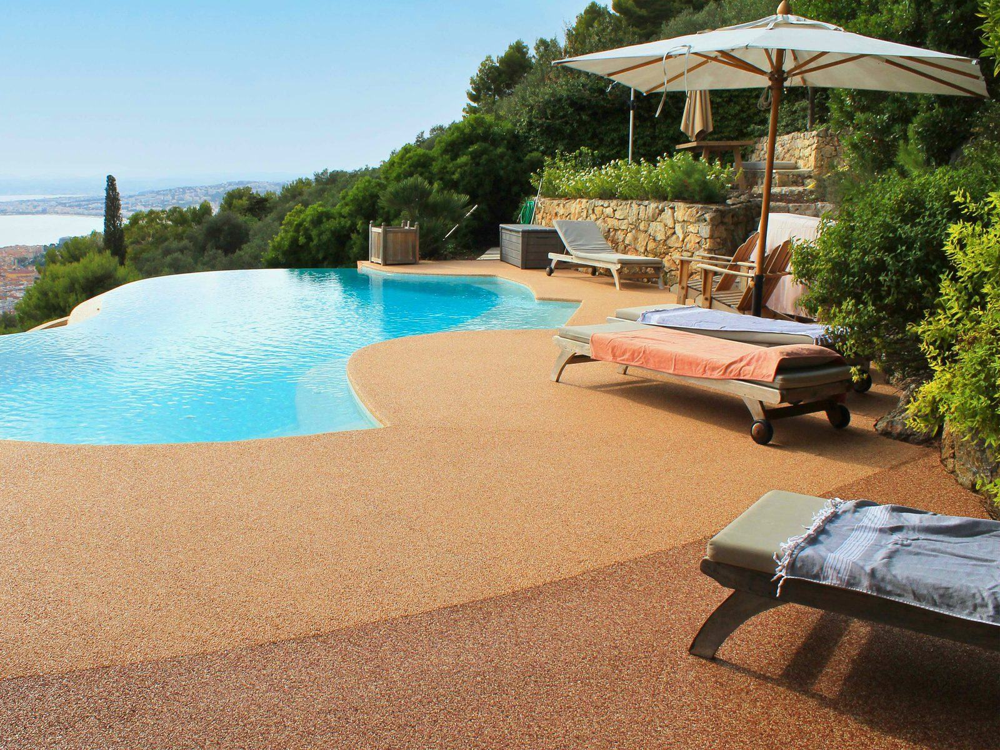
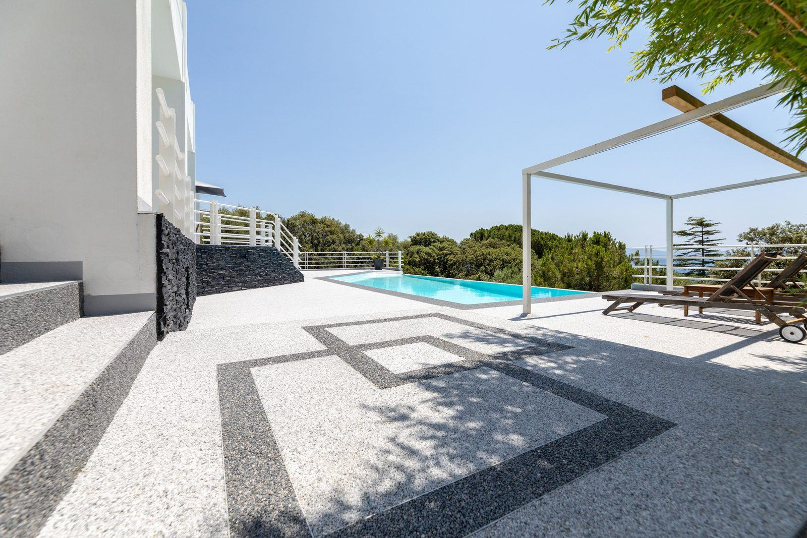

Résineo convierte el borde de tu piscina en una superficie de piedra natural que deja pasar el agua: sin charcos, segura con los pies mojados y sin juntas donde se acumule la suciedad. Lo instalamos en todas las islas como distribuidor oficial.


Cada proyecto admite motivos y combinaciones de grava propias, como en esta terraza.
La playa de una piscina es la zona más exigente de una casa: agua constante, pies descalzos, cremas solares, cloro y, en Canarias, sol prácticamente todo el año. Los suelos tradicionales fallan justo ahí. El gres resbala cuando está mojado, la madera se agrisa y se astilla, y el hormigón impreso acaba encharcando y manchándose.
Résineo es una moqueta de piedra: entre un 95 y un 97 % de granos de mármol o cuarzo natural unidos con una resina de poliuretano transparente. Entre grano y grano quedan pequeños poros por los que el agua pasa hacia abajo en lugar de quedarse en la superficie.
Una de las grandes ventajas de Résineo es que, en la mayoría de las reformas, se aplica directamente sobre el pavimento existente: baldosa bien adherida, losa de hormigón o solera. Sobre hormigón se trabaja normalmente con unos 10 mm de espesor para uso peatonal. Si el soporte es de grava compactada se aumenta a unos 30 mm.
El soporte tiene que estar sano, limpio y seco y tener una ligera pendiente (alrededor del 1-2 %) hacia un punto de evacuación. Lo revisamos en la visita técnica y, si hace falta reparar algo antes, te lo indicamos en el presupuesto.
En Canarias la piscina se usa casi todo el año y el sol es intenso. Por eso solemos recomendar tonos claros (Perla, Arena) para el borde, que se calientan menos, y reservar los tonos oscuros para cenefas o detalles. Si tu piscina es de agua salada o tiene un tratamiento especial, cuéntanoslo y te confirmamos el sistema más adecuado. Puedes ver todos los acabados en la tecnología Résineo.
¿Prefieres una piscina entera de arena, sin gresite? Ese es otro sistema que también instalamos: piscinas de arena Bio.design en Tenerife.
Sí, en la mayoría de los casos. Résineo se aplica sobre losa de hormigón, solera o baldosa existente siempre que esté sana, limpia y bien adherida. Así se evita levantar el suelo antiguo, con menos obra, menos escombro y menos días sin piscina. Lo comprobamos en la visita técnica.
Sí. Résineo Drain ha obtenido en ensayos normalizados la clasificación PN18, la indicada en Francia para zonas de pies descalzos como las playas de piscina. El agua se filtra entre los granos de piedra, así que no queda una lámina de agua en la superficie.
Depende sobre todo del color. Los tonos claros, como Perla o Arena, absorben menos calor y son los que recomendamos para el borde de piscina en Canarias. Cualquier suelo oscuro expuesto a pleno sol se calienta más.
El precio se calcula por metro cuadrado y depende de la superficie, del estado del soporte, del espesor necesario, del color elegido y de la isla. Hacemos el presupuesto gratis y sin compromiso con las medidas y unas fotos del espacio.
Para el día a día basta con agua a presión de manguera. Una vez al año conviene una limpieza más a fondo con cepillo y jabón neutro o con hidrolimpiadora a baja presión (máximo 80 bar y a unos 30 cm). No hay que barrer arena dentro de los poros, porque taponaría el drenaje.
Envíanos medidas aproximadas y un par de fotos y te preparamos un presupuesto gratuito y sin compromiso.
Pedir presupuesto